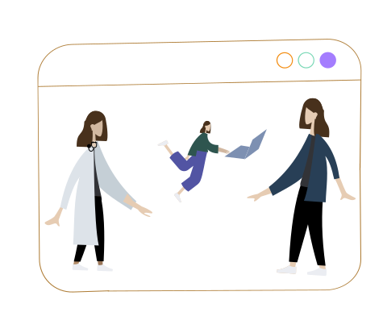

What I Actually Do
Full Cycle Transformation.
I handle the full cycle of digital transformation and deployment. From high-level strategy to getting into the weeds of execution, my work spans across healthcare, social impact, and enterprise tech. Whether navigating the technical complexity of LLM deployment, redesigning a stalled sales pipeline, or untangling operational friction, I turn abstract technical potential into measurable commercial growth.
- check_circle Industry Transformation: End-to-end deployment in healthcare, EdTech, and non-profit initiatives.
- check_circle Commercial Growth: Business development and sales across SMEs and large corporate clients.
- check_circle Technical Execution: Program management and hands-on AI prototyping (NLP/LLMs, Python, JS).
- check_circle Brand Strategy: Creative marketing, visual content, and storytelling.

How I Know What Works
I am a trained doctor who pivoted into the tech sector. This path gave me a unique lens: I understand the deeply human side of systems implementation just as well as the technical and commercial realities. Because my background is broad, I see the full picture of an organization—connecting the underlying technical infrastructure directly to the commercial incentives that keep the lights on.
Human Centricity
Understanding the gravity of decisions and the deeply human side of implementation.
Technical Depth
Navigating technical complexity to deliver functional, high-stakes infrastructure.
Commercial Reality
Aligning technical capabilities with commercial incentives and market agility.
How It Was Built
The Discipline of a Doctor, the Mindset of a Builder.
I have scaled startups, managed high-value digital health portfolios, and trained AI models on complex clinical and technical data. By moving fluidly across clinical practice, B2B sales, and AI development, I ensure that innovations aren't just built—they are successfully adopted and commercialized.
Where I Add the Most Value
Thriving in Transition.
The situations I am best suited for are those in transition. If you are a founder or leader looking for someone who can translate technical complexity into real-world business results, I am glad to be thought of.
A healthcare or enterprise organization looking to integrate AI, but unsure where the operational friction will hide.
A leadership team that needs a partner who can fluidly manage both technical delivery and commercial go-to-market strategy.
A project that is currently stuck in the frustrating gap between a "great idea" and a "delivered result."
Outside the Work
Creativity & Connection.
When I am not untangling business and technology challenges, I value community initiatives, exploring new cultures, creative projects, and taking time for reflection.
"I find that the same curiosity that drives me to solve a complex system failure is the same one that leads me to explore new cultures. I welcome conversations with people building at the edge of health, AI, and human systems."
Synthesis
Connecting dots across medicine, engineering, and culture.
Community
Fostering resilience through health initiatives and education.